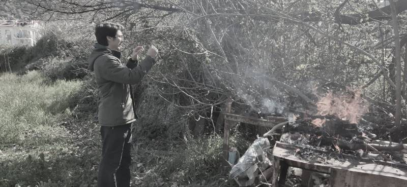

Ducane was born in Fethiye, a beautiful coastal town in Turkey known for swimming, hiking, and paragliding. Along with his two close friends, he attended three different high schools in different cities of Turkey to explore new places and meet new people. He is passionate about science, particularly physics and mathematics, and is known for being a hardworking and curious student.
Ducane is also an athletic person. He has been playing basketball since the age of 16 and enjoys swimming, mountain biking, skiing, and hiking. His love for adventure and outdoor activities complements his dynamic personality.
He studied Game Design and Development at Bahcesehir University, one of the top game development schools in Europe, for one year. Currently, he is continuing his studies at Flathead Valley Community College in Montana.
Ducane is also a skilled cook who enjoys preparing meals for his friends and family. He is a natural teacher who enjoys sharing knowledge and guiding others. As a licensed rafting guide, he loves taking people on unforgettable rafting trips through nature.
